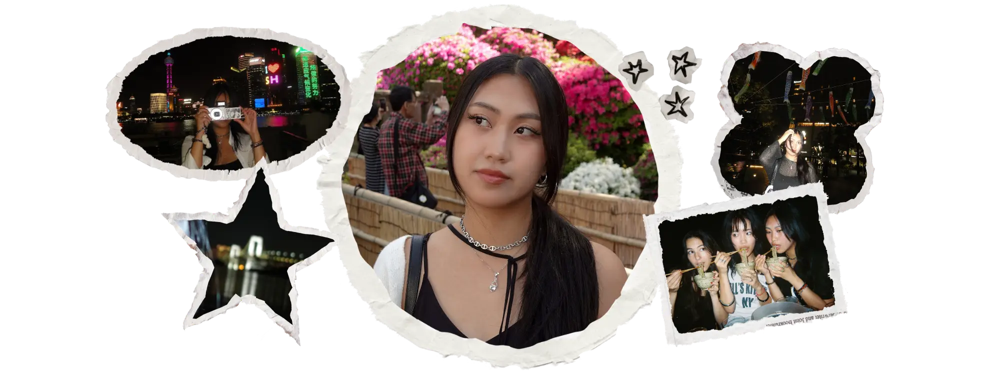

my work is a collection of personal interests and cultural experiences as a visual and textual medium.
i enjoy blending alternative textures and gradients to create a distinct identity through design. bold colors, metallics, and grunge aesthetics are all up my alley; and i often incorporate them into my designs if my clients love them, too! i hope to create a welcoming community of likeminded people who share similar aesthetics to myself, by integrating culture and personality into design.
elements of chinese and east asian culture are prevalent throughout my color palettes and personal writing projects. this is by use of natural elements, literary symbolism, and reflections of my own life experience with chinese culture as an adoptee. jiaozi, a creative nonfiction piece which Brevity: A Journal of Concise Literary Nonfiction published, is an example of how my chinese identity is reflected in my writing. i have great pride in my ethnic identity and want to continue bridging the gap between creativity and heritage.
the physical design mediums i most often use include Illustrator, InDesign, watercolors, hand-drawn sketches, and photography. other creative mediums i dabble in include poetry and creative nonfiction. i also enjoy conducting critical media analyses and research projects.